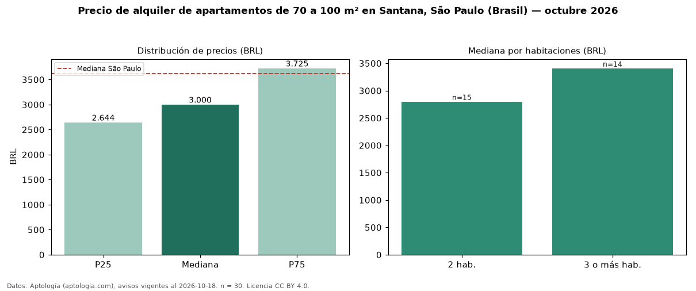

Precio de alquiler de apartamentos de 70 a 100 m² en Santana, São Paulo (Brasil) — octubre 2026
En Santana, São Paulo (Brasil), la mediana de canon mensual de apartamentos de 70 a 100 m² es BRL 3.000, según 30 avisos vigentes. Prácticamente coincide con la mediana de todos los apartamentos en alquiler de Santana (BRL 3.000, n = 153); este segmento reúne el 20 % de esos avisos. El área mediana anunciada es 80 m². El segmento con más oferta es el de 2 habitaciones (15 avisos, mediana BRL 2.800); pasar de 2 habitaciones a 3 o más habitaciones cambia la mediana +22 %. La cuota de mantenimiento o condominio mediana declarada es BRL 1.120 al mes (n = 29), aparte del canon. La mediana de todos los apartamentos en alquiler de São Paulo es BRL 3.621 (−17 % de diferencia). La mitad central de los avisos va de BRL 2.644 a BRL 3.725 (razón 1,4), una dispersión moderada. Datos: Aptología (aptologia.com), CC BY 4.0 — https://www.aptologia.com/br/aluguel/sao-paulo/santana. Archivos: PDF, CSV con las cifras y gráfica PNG.

| Avisos únicos | 30 |
|---|---|
| Percentil 25 | COP 2.643 |
| Mediana | COP 3.000 |
| Percentil 75 | COP 3.725 |
Fuente: avisos vigentes de portales inmobiliarios recopilados por Aptología, deduplicados (mínimo 30 avisos únicos por celda). Precios pedidos, no cerrados. Fecha: 2026-10-18.